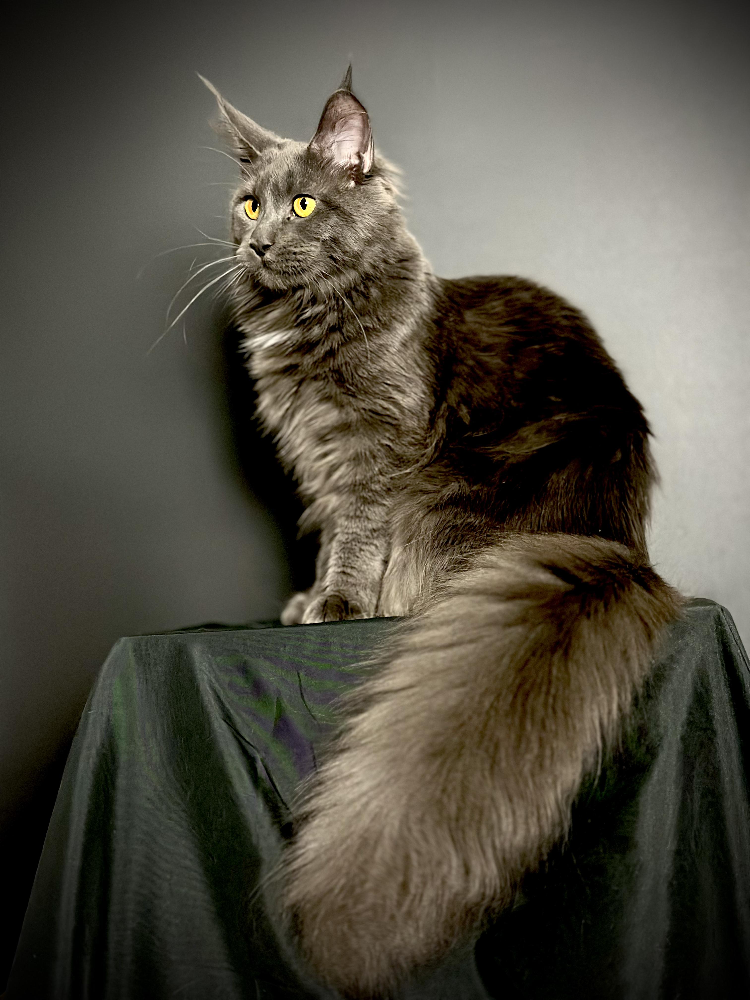
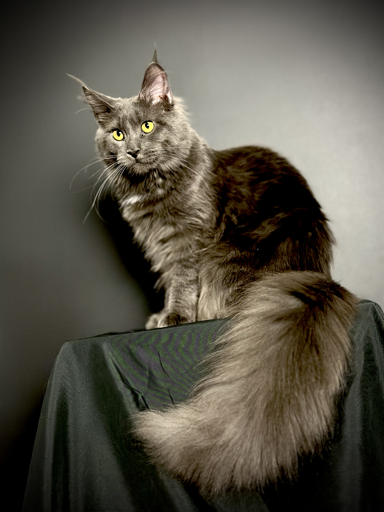
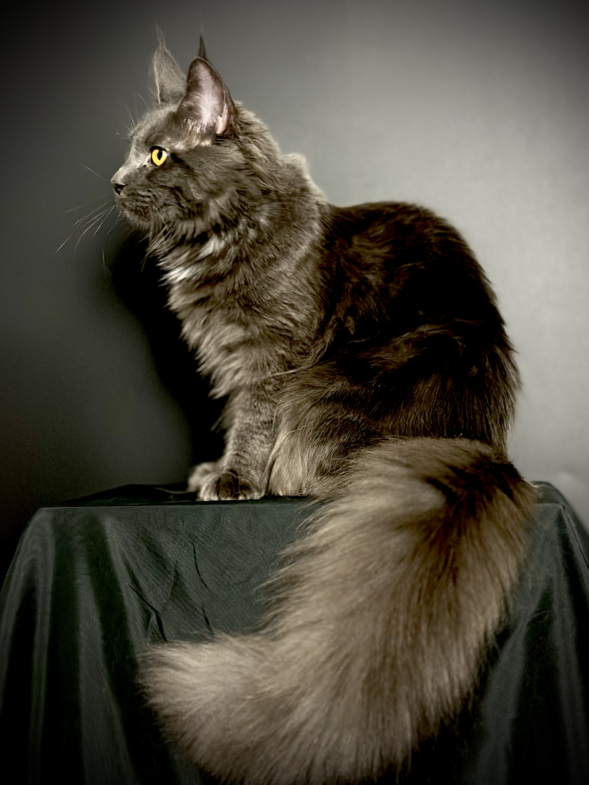
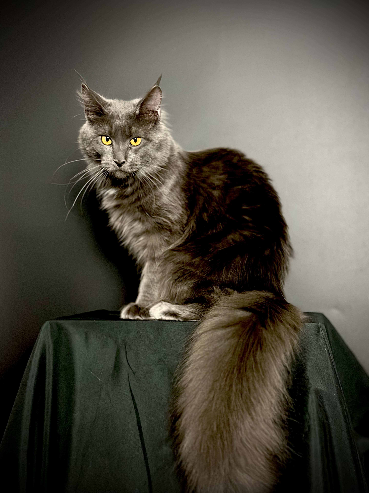

김포시 Premium Maine Coon
김포메인쿤분양
김포시 및 한강 신도시 가족을 위한 프리미엄 메인쿤분양 안내입니다. 김포 지역 반려 가족에게 맞춤형 메인쿤 입양 상담을 제공합니다.

김포시 메인쿤분양 안내
김포 지역(구래, 장기, 김포한강, 운양 등)에서 메인쿤분양을 찾고 계신다면, 메인쿤분양 전문 캐터리의 지역 맞춤 상담을 이용해 보세요. 김포 거주 가족의 생활 환경과 반려 목적에 맞는 메인쿤을 추천해 드립니다.
메인쿤은 대형 장모종으로 메인쿤 크기, 메인쿤 성격, 털빠짐 관리 등 품종 특성을 미리 이해하는 것이 중요합니다. 김포메인쿤분양 상담 시 메인쿤 고양이 종류별 특성과 분양 절차를 상세히 안내해 드립니다.
김포메인쿤분양은 구래, 장기, 김포한강, 운양 등 김포시 전역 상담이 가능합니다.
김포 지역 김포메인쿤분양 특장점
지역 맞춤 상담
김포 한강 신도시 넓은 주거 공간에 어울리는 대형 메인쿤 분양을 안내합니다.
방문·직접 확인
김포 인근 방문으로 메인쿤 고양이 종류와 건강 상태를 확인할 수 있습니다.
사후 관리 지원
김포 지역 가족을 위한 메인쿤 성격·크기 맞춤 추천 서비스를 운영합니다.
김포 김포메인쿤분양 갤러리




김포메인쿤분양 자주 묻는 질문
Q. 김포에서 메인쿤분양 상담이 가능한가요?
A. 네, 김포메인쿤분양은 구래, 장기, 김포한강, 운양 등 김포시 전역 상담이 가능합니다.
Q. 김포 메인쿤분양 시 어떤 종류가 인기인가요?
A. 실버 태비, 블루 스모크, 브라운 태비 등이 인기이며, 김포 가족 환경에 맞는 메인쿤 고양이 종류를 추천해 드립니다.
Q. 김포에서 성묘 분양도 가능한가요?
A. 성묘 메인쿤 분양이 가능합니다. 성격이 안정된 성묘는 김포 지역 초보 반려인에게도 적합합니다.
김포메인쿤분양 상담을 원하시면 지금 연락주세요.
김포 메인쿤 입양문의 0505-464-1004